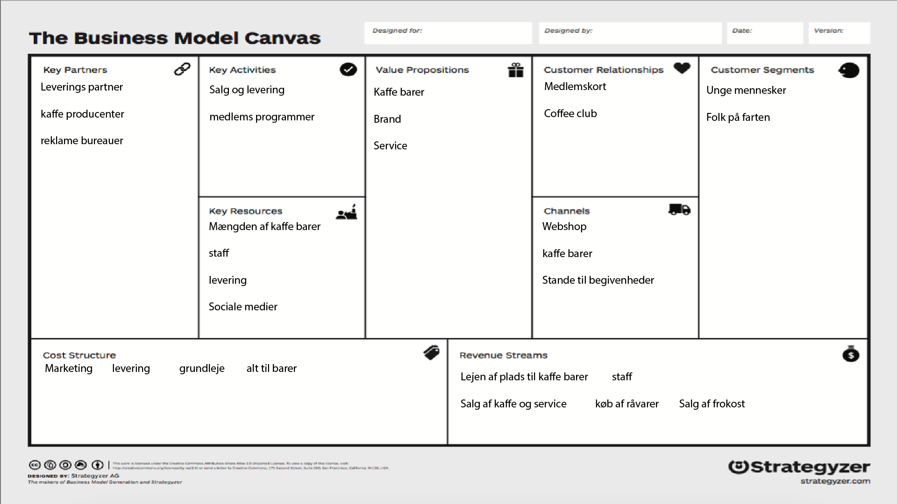

Business Model Canvas
Her ses BMC'et for Espresso house, som beskriver hvordan firmaet får deres barer til at løbe rundt med profit.
Description
-
Custommer Segment
Her ses hvilke mennesker er det Espresso house henvender sig til, når de skal sælge deres produkt. Firmaets kunder ligger direkte på ad Custommer relationship, da det er kunderne som Espresso house forsøger at holde fast på, eller fornye.
-
Customer Relationship
Custommer relationship er hvad et firma bruger, til at holde en forbindelse mellem dem, og deres kunder. Det kommer hyppigst iden for branchen som et slags medlemskort, eller "hver 10'ende kaffe er gratis" kort. Dette ligger sig op af channels, da channels er det som et firma bruger til at nå kunder med.
-
Channels
Channels er det som et firma bruger til at nå sine kunder. For espresso house er det for det meste deres faste kaffe barer som ligger over hele stor københavns området, og mange andre key-locations. Desuden bruger de mobile stande ( som dem på cykler ) til at nå ud til andre spots i tilfælde af chancen for stor salg tilegner sig.
-
Value Proporsitions
Dette felt er tilegnet deres værdier, hvad de sælger, hvad de ejer, og hvilke muligheder firmaet har. Dette segment hænger meget sammen med deres channels, da det for mange firmaer er det som de bruger til at kunne levere videre deres goder.
-
Revenue Stream
Revenue stream, er en samling af channels og deres værdier. Her kan man se hvad det er som firmaet tjener penge på, og hvordan de ligeledes hiver penge tilbage på kontoen. Dette og Cost structure hænger sammen, da det beskriver hvordan hele business siden af firmaet fungere.
-
Cost Structure
Dette felt er tilegnet til de funktioner som et firma har til at lave profit. Hvor kommer pengene fra, og hvad kan man gøre for at maximerer den?
-
Key Rescources
Her kan man se Hvad espresso house har at gøre godt med, for at tjene penge, disse faktorer er hvad der kan maximere deres profit som nævnt før i Cost Structure.
-
Key Activities
Dette felt er til at vise hvad Espresso house gør for at forvandle Value Proporsitions til Profit som beskrives i Cost Structures. F.eks, deres salg og levering, som bruger både channels og Customer Relationship, til at lave profit.
-
Key Partners
Dette punkt er til at vise de partnere som Espresso house bruger for at udfylde firmaets mangler. Da Espresso house dem selv ikke høster bønder og modner dem, ville det være en af deres partners. Dette punkt hænger sammen med Value Proporsitions, da det direkte har indflydelse på, hvad espresso house kan fremstille og sælge.